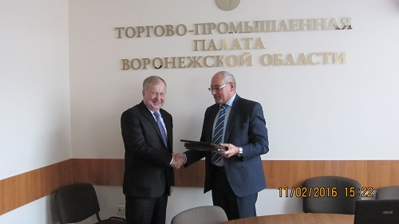
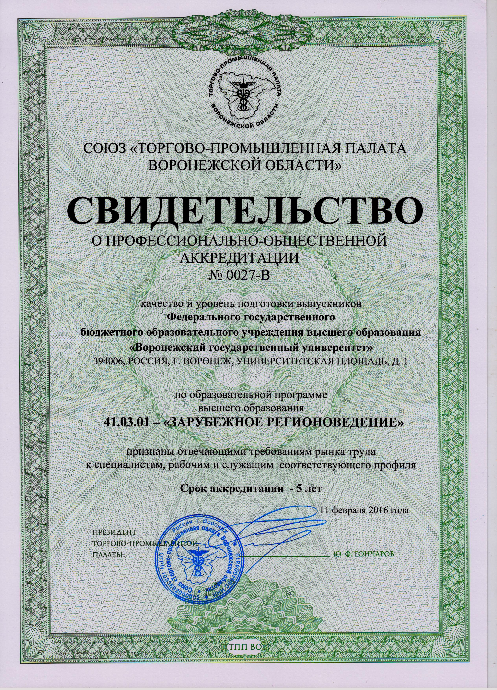
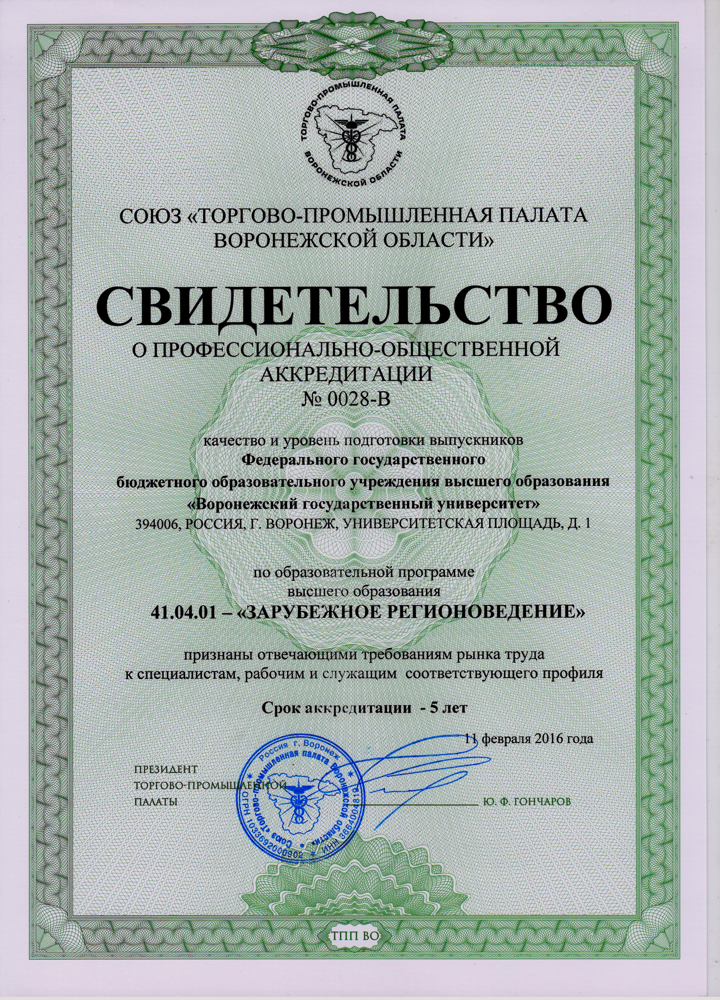

|
По результатам итогового совещания экспертной комиссии Торгово-промышленной палаты Воронежской области (ТПП ВО) 11 февраля 2016 года свидетельство о профессиональной общественной аккредитации сроком на 5 лет получили четыре образовательные программы факультета международных отношений: международные отношения (бакаклавриат), зарубежное регионоведение (бакалавриат), международные отношения (магистратура), зарубежное регионоведение (магистратура). Данные программы были признаны отвечающими требованиям рынка труда к специалистам соответствующего профиля.
Профессиональная общественная аккредитация проходила в соответствие с графиком в декабре 2015 года. В качестве экспертов выступили советник Президента Союза ТПП ВО по образовательным проектам Г.А. Козберг, руководитель Центра делового образования ТПП ВО В.В. Шамарин, заместитель руководителя ЦДО Союза «ТПП ВО» Е.В. Талицких, начальник Центра управления качеством образования ВГУИТ Л.В. Лыгина, специалист по таможенному оформлению ГК «Лесаффр» А.С. Казьмин, Генеральный директор ООО «Выставочный центр ВЕТА» И.Ю. Бельтюков.
Анализ был проведен на основе ряда критериев, среди которых: успешное прохождение выпускниками процедуры независимой оценки квалификаций; соответствие профессиональным стандартам сформулированных в ООП результатов; соответствие компетенциям и результатам обучения учебных планов; востребованность выпускников работодателями; участие работодателей в образовательном процессе; соответствие профессиональным задачам материально-технических, информационно-коммуникационных, учебно-методических ресурсов.
Отдельное внимание профессионально-общественная аккредитация уделила показателям ресурсного обеспечения подготовки профессиональных кадров на факультете; обеспеченности интеграции научной, образовательной и воспитательной деятельности.
Отмечая высокие достижения по обозначенным критериям, экспертная комиссия особо подчеркнула важность и ценность единого командного духа, заинтересованности в результатах своей профессиональной деятельности, продемонстрированных профессорско-преподавательским составом кафедры зарубежного регионоведения и экономики зарубежных стран, ответственной за реализацию программ по направлению «зарубежное регионоведение». Особо были выделены успехи кафедры при тесном сотрудничестве с работодателями в организации производственных практик для студентов.
Кафедра международных отношений и мировой политики, ответственная за реализацию образовательных программ по направлению «международные отношения», была отмечена экспертами как пример высококачественной подготовки бакалавров и магистров, востребованных на рынке труда. Квалифицированные преподаватели, регулярно проходящие стажировки в ведущих российских и зарубежных центрах, тесное сотрудничество с такими работодателями, как Представительство МИД по Воронежской области, Правительство Воронежской области, Областная Дума, Управления международного сотрудничества вузов и многими другими, создали прочную базу для формирования конкурентоспособных студентов-международников.
Студенты факультета, большинство из которых являются обладателями сертификатов программ международной академической мобильности, победителями целого ряда конкурсов, подтверждающих успешное освоение профессиональных компетенций, активно участвуют в молодежных общественных объединениях, являются постоянными участниками Моделей ООН, по мнению экспертов, задают достаточно высокую планку для оценки профессионального мастерства.
Факультет международных отношений поздравляет профессорско-преподавательский состав и студентов с признанием эффективности их деятельности со стороны общественной аккредитации и желает дальнейших профессиональных достижений и успехов!





|